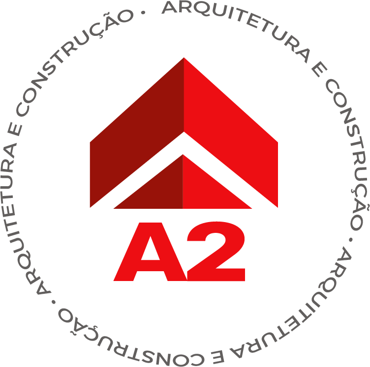

A medição não é o processo
Contratar só a topografia resolve a medida, não a instrução. O usucapião exige peças que conversem com a matrícula, com o cadastro imobiliário e com a posse que está sendo alegada — e isso não sai de uma medição isolada.
A A2 executa toda a parte técnica do processo em um único serviço — levantamento no imóvel, planta, memorial descritivo, divisas e confrontantes, com responsabilidade técnica assinada.
Quem procura a A2 normalmente já tentou. Já tem o advogado, muitas vezes já tem o processo aberto — e recebeu uma exigência que ninguém sabe exatamente como cumprir.
A planta não bate com a matrícula. O memorial não fecha a área. Falta a qualificação de um confrontante. A medição foi feita, mas não contempla a edificação que existe no terreno. O cartório devolve, o juízo intima, e o processo volta para o começo.
Enquanto isso, o imóvel continua fora do seu nome. Não dá para vender, não dá para financiar, não entra no inventário, e a família segue sem a segurança jurídica que o imóvel deveria ter há anos.
E, na maioria das vezes, não é falta de direito.
É falta de peça técnica compatível com a realidade física do imóvel, com a documentação existente e com o que o procedimento exige.
Contratar só a topografia resolve a medida, não a instrução. O usucapião exige peças que conversem com a matrícula, com o cadastro imobiliário e com a posse que está sendo alegada — e isso não sai de uma medição isolada.
A área ocupada raramente coincide com a matrícula e com o IPTU. Sem compatibilizar os três antes de desenhar, a peça nasce contestável — e a divergência aparece justamente na análise.
Identificar, qualificar e localizar os confrontantes é a parte mais trabalhosa e a que mais gera exigência. Uma divisa mal levantada ou um confrontante não identificado trava o procedimento inteiro.
Refazer a peça, recolher assinaturas de novo, reprotocolar e esperar nova análise. O retrabalho técnico é quase sempre mais caro do que ter feito o levantamento completo na primeira vez.
A A2 não entrega uma peça avulsa e some. Analisamos a documentação, vamos ao imóvel, levantamos a situação real, produzimos todas as peças exigidas, assinamos a responsabilidade técnica e continuamos disponíveis para as adequações que aparecerem durante o procedimento — falando direto com você, com o advogado e com o cartório.
Um contrato, um responsável técnico, um interlocutor. É isso que diferencia um escritório de regularização imobiliária de um prestador que só mede.
Tudo abaixo faz parte de um único serviço contratado por projeto. O que o seu caso exige é definido na análise inicial.
A via escolhida muda o que é exigido de você tecnicamente. Entender isso antes evita contratar a peça errada.
Base normativa. O procedimento extrajudicial é regulado pelo Provimento CNJ nº 65/2017, cujas regras foram consolidadas no Provimento CNJ nº 149/2023. As exigências podem variar conforme a serventia, o juízo e as particularidades do caso — por isso a A2 faz a análise documental antes de definir o escopo técnico. Esta página é informativa e não substitui orientação jurídica; a condução do processo é do advogado.
A peça técnica mais barata costuma ser a mais cara, porque o custo dela aparece depois — quando o procedimento já está em andamento.
O custo de refazer é sempre maior do que o custo de fazer certo da primeira vez.
Parceria técnica para escritórios que atuam com direito imobiliário, sucessões e usucapião — com peças prontas para instruir e retorno direto nas exigências.
“Excelente trabalho, recomendo com certeza.”
“Excelente trabalho, recomendo com certeza.”
“Ótimo custo benefício e trabalho de qualidade.”
“Fizeram um serviço de qualidade sem muita burocracia.”
A A2 Arquitetura e Construção é um escritório fundado por um casal de arquitetos, com atuação consolidada em São Paulo. Trabalhamos com projetos, licenças, alvarás e regularização imobiliária — e é essa bagagem que nos permite enxergar o imóvel inteiro, e não apenas a medida dele.
Na prática, isso significa ler a matrícula, o IPTU e os documentos de posse junto com o levantamento de campo, para que a peça técnica nasça coerente com a realidade do imóvel e com o objetivo do procedimento.

O levantamento é feito presencialmente no imóvel. Estas são as regiões de atendimento prioritário:
Atendimentos em outras cidades do Estado de São Paulo são avaliados caso a caso, conforme a viabilidade do levantamento técnico.
A A2 executa a parte técnica do processo: levantamento, plantas, memorial, laudos e responsabilidade técnica. A condução jurídica do pedido é do advogado. Se você ainda não tem um, conseguimos trabalhar junto ao profissional que você escolher.
Sim. Planta e memorial descritivo assinados por profissional legalmente habilitado, com prova da ART ou do RRT, são item da instrução do pedido extrajudicial. Há hipótese de dispensa para unidade autônoma de condomínio edilício ou lote de loteamento regularmente instituído — mas isso precisa ser verificado no seu caso.
A exigência varia conforme o juízo e a forma de instrução do processo. Mesmo quando não é formalmente exigida, a peça técnica costuma ser decisiva para identificar o imóvel, delimitar a área pretendida e sustentar a posse alegada.
O valor varia conforme o tamanho do imóvel, a localização, a complexidade do levantamento e a quantidade de peças técnicas necessárias. Por isso fazemos a análise do caso antes de orçar — assim o orçamento reflete o que o seu processo realmente exige.
Depende da complexidade do levantamento, do acesso ao imóvel e da disponibilidade dos documentos. O prazo é definido junto com o escopo, na proposta — nunca estimado por telefone sem olhar o caso.
Sim, e é um dos casos que mais atendemos. Analisamos a exigência, verificamos o que foi produzido antes e definimos o que precisa ser refeito ou complementado para cumprir o que foi pedido.
Confrontantes são os titulares e ocupantes dos imóveis vizinhos ao que se pretende usucapir. O procedimento depende de identificá-los e qualificá-los corretamente — é um dos pontos que mais gera exigência quando o levantamento é feito de forma superficial.
Sim. O levantamento é feito presencialmente, no imóvel. É isso que permite registrar as edificações existentes, as divisas reais e as confrontações — informações que não se obtêm apenas a partir de documento.
Sim. Falamos tecnicamente com o cliente, com o advogado, com o cartório e com os demais profissionais envolvidos. Isso encurta muito o tempo de resposta quando aparece uma exigência durante o procedimento.
O atendimento é concentrado em São Paulo capital, Grande SP e Alto Tietê. Outras cidades do Estado são avaliadas caso a caso, conforme a viabilidade do levantamento.
Atuamos como parceiro técnico do escritório: analisamos a viabilidade antes do protocolo, produzimos as peças e permanecemos disponíveis para as exigências. Para escritórios com carteira de processos, o atendimento é contínuo. Veja a seção para advogados.
Responda a análise e receba o encaminhamento técnico do seu caso — sem compromisso.